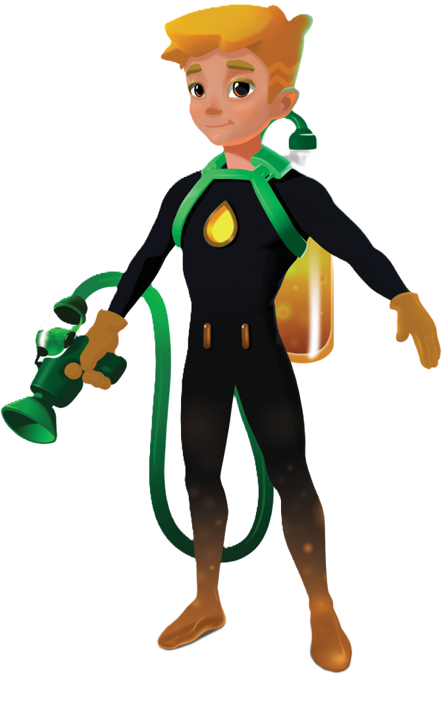

Sıfır Atık Kahramanları
Sosyal sorumluluk projesidir.

Sosyal sorumluluk projesidir.
Devam etmek için kaydırın
Aşırı tüketim alışkanlıkları ve hızla artan kirlilik, çevresel sürdürülebilirlik için büyük bir tehdit oluşturuyor.
Çevresel tahribat nedeniyle çölleşme artıyor ve biyoçeşitlilik ciddi şekilde zarar görüyor.
Ormansızlaşma ve doğal yaşam alanlarının kaybı, küresel ekosistem dengesini bozuyor.
Sanayi ve insan faaliyetleri nedeniyle sera gazlarının artması, küresel ısınmayı hızlandırıyor.
Atmosfere yayılan gazlar, güneş ışınlarının normalden fazla ısınmasına ve iklim değişikliğine neden oluyor.
Türkiye’de yılda 32,2 milyon ton çöp üretilmektedir.
İstanbul’da günlük üretilen 18 bin ton çöp, bir futbol sahasını 9m yüksekliğe kadar doldurabilir.
Avrupa’da çöpler %50’ye yakın geri dönüşüm oranı sonrası, yakma sistemi ile enerji kazanımına katkı sağlamaktadır.
Türkiye’de geri kazanım oranı %20 seviyelerindedir. Bu oran düşük olduğu için yakma sistemi ile enerji kazanımı sağlanamıyor.
Çizgi film animasyonlarıyla çevre sorunlarına dikkat çekmek, toplumsal bilinci artırmak ve eğitim süreçlerini verimli hale getirmek amacıyla tasarlanmış örnek bir sosyal sorumluluk projesidir.
Ilımlı ama kararlı, alçakgönüllü ama korkusuz bir kahraman.

İkiz kardeşler Sıfat ve Fırat, çevreci bir yaklaşımla çocuklara doğa sevgisi ve sıfır atık bilincini aşılamayı, aynı zamanda ekolojik yurttaşlık görevini benimsetmeyi amaçlamaktadır. Tıpkı kendileri gibi, çevreyi koruma misyonunu üstlenen diğer Sıfır Atık Kahramanlarıyla birlikte, yaşadıkları çevreyi, doğayı, denizlerimizi, atmosferi ve ozon tabakasını korumaya kendilerini adamışlardır.
Özellikler:
Fırat, karşılaşılan sorunlara sürekli çözümler üreterek, Sıfır Atık Kahramanlarını motive etmiş, güvenlerini kazanmış ve güçlü bir lider olarak onlarla beraber sıfır atık hedefi doğrultusunda mücadeleye atılmıştır.
Çevrenin dostu ve atık savaşçısı, doğa için mücadele eden kahraman.

İsmi bile haykırıyor: Çevrenin Dostu ve Atık Savaşçısı! Yeşile ve yaşadığı çevreye büyük bir sevgiyle bağlı olan Sıfat, çocukluğundan beri doğaya duyduğu aşk ve bitmeyen enerjisiyle Sıfır Atık Kahramanlarıyla bir takım kurmanın hayalini yaşıyordu.
Onun en büyük mutluluğu, atık malzemeleri yeniden doğaya kazandırmak, geri dönüşüm bilincini topluma yaymak ve ekosistemi korumaktı. Neşeli tavırları ve ilham veren kişiliği sayesinde doğa dostu Kahramanların kalbini kazanmış; kararlı ve kendinden emin duruşuyla da onlara yön gösterip, liderlik ederek harekete geçirme gücüne erişmişti.
Özellikler:
Narin ama güçlü! Camsu, cam atıkları yeniden hayata kazandıran kahraman.
Çok narin ve kırılgan bir yapısı olan sevimli Camsu, keskin hatları sebebiyle okuldaki arkadaşlarından yeterli ilgiyi göremedi. Kendini doğaya adamaya karar verdiğinde, Sıfat ve Fırat ile tanışarak yeni bir amaç kazandı.
Sıfır Atık Kahramanlarının arasına katılan Camsu, doğadaki cam atıklarını toplamak ve onları yeniden hayata döndürmek için gönüllü olarak çalışmaya başladı. Artık cam atıkları doğada değil, geri dönüşümde hayat buluyor!
Özellikler:
Sonsuz enerjisiyle tehlikeli atıklardan sorumlu kahramanımız.
Sonsuz enerjiye inanmıyor musunuz? Öyleyse henüz Pilcan'la tanışmadınız. Siz bir de onu annesinden dinleyin! Kundakta bile yerinde duramayan, hiperaktif bir çocukluk geçiren Pilcan, enerjisini çevreye zarar veren pilleri toplamaya adar.
Toprağa dokundukça sakinleşir ve annesi Batarya Hanım'ın da üstünden yük almış olur.
Özellikler:
Pilcan, tehlikeli atıkları doğaya zarar vermeden toplamak için tasarlanmış bir çevre kahramanıdır.
İsraf edilen ekmekleri ve unlu mamulleri ihtiyaç sahiplerine ulaştırır.
Halk arasında saygı duyulan ulu karakter Somuncu Baba, israf edilen ekmekleri ve unlu mamulleri, kolundaki dipsiz büyülü sepete doldurarak, ihtiyaç sahibi bütün canlılara, gökyüzüne ve barınaklara bağışlar. Manevi birikimin yanı sıra maddi olarak da tasarruf sağlar.
Sofralarımızın vazgeçilmez besin maddesi olan ekmek; farklı türleri olan iyi bir enerji kaynağı olduğu kadar merhameti ve bereketi temsil eder.
Özellikler:
İhtiyaçtan fazla ekmek almamalı, bayatlayan ekmekleri çöpe atmak yerine değerlendirmeliyiz. Ekmeğe hürmet edin. ÇÖPE ATMAYIN! Çünkü Allah onu değerli kılmıştır.
Metal atıklardan sorumlu cesur kahramanımız.

Sanayi kültüründe büyüyen delikanlı Metalcan, kendini bildiğinden beri suskun, cesaretli ve biraz da asosyal bir karaktere sahiptir. İçine kapanıklığı onu daha sert mizaçlı bir hale getirmiştir.
Aile mesleği demir-çelik işi ile uğraşan dedesi Demirhan'ın yanında büyüyen Metalcan, efsunlu çekiciyle demir, alüminyum, bakır, çinko ve nikel gibi metallere şekil verip yeniden kullanıma sunmayı kendine hobi edinmiştir.
Sıfır Atık Gibisi Yok! Havasıyla, toprağıyla, suyuyla ve sayısız yararlarıyla tüm canlılar için yaşamsal öneme sahip olan doğayı koruyalım. HERKES GÖREV BAŞINA!
Özellikler:
Metalcan, metal atıkları yeniden kullanıma kazandırarak hem çevreyi koruyan hem de sanatı ve müziği seven özel bir kahramandır.
Atık yağları geri dönüştüren, çevreyi temiz tutan kimya dehası!
Dostum Yağdam, Adamım! Elindekinin silah olduğunu sanmayın! Önce ben de öyle düşünmüştüm, ama sırtındaki yağ dolu fanusu görünce anladım.
Atık diye çöpe giden petrol, mutfak ve sanayi yağlarının suya ve toprağa karışarak doğaya zarar vermesini önlemek için, özel vakum cihazıyla onları çekip, atık yağ depolarına taşıyor. Yağdam tam bir kimya ustası! Atık yağları geri dönüştürerek biyodizel yakıt üretiyor ve böylece çevre dostu, yenilenebilir bir enerji kaynağı elde ediyor.
Özellikler:
Yağdam diyor ki:
Çöpe giden her yağ, doğaya zarar! Yağları çöpe dökmeyin, biyodizel üretimi için geri dönüşüme kazandırın! SIFIR ATIK GİBİSİ YOK!
Mekanik bir dosttur Orat. Ruhu yok, kokusu çok, meyve aromalı tam bir sebze canavarı!
Mesaisi akşam sonrasında pazar yerlerini bir bir dolaşarak, çöp diye atılan sebze ve meyveleri toplayıp öğüterek komposta çevirmek. Utangaç yapısı ve insanlara rahatsızlık verme korkusuyla geceleri bizler mışıl mışıl uyurken fedai kahramanımız Orat, organik çöplerimizi öğütüp gübre haline dönüştürerek, toprağın güçlenmesi, bitki ve ağaçların sağlıklı büyümesinin yanı sıra, iyi meyve vermeleri ve çiçek açmaları için doğamıza katkılarda bulunur.
Özellikler:
Orat diyor ki:
Çöpsüz bir yaşam tarzı benimseyerek, çevre kirliliği ve atık oluşumunu engelleyip, SÜRDÜRÜLEBİLİR DÜNYA için geri dönüştürün...
Anaç kadın karakterimiz Pamuk Abla, tevazusu ve güler yüzü ile herkese anne gibi davranarak, doğa dostu kahramanlarımızın da koruyucusu olmuştur.
Yardımseverliği ve bir işe sıkıca sarılması tıpkı pamuktan bir kumaş gibi, şefkatli kollarıyla tüm ihtiyaç sahiplerini kucaklayan Pamuk Abla, doğaya atılan ve kullanılmayan giysileri, kumaşları bir bir toplayıp, tıpkı insanlığı birleştirir gibi iğne iplik dokuyarak yeniden kullanıma hazır hale getirir.
Özellikler:
Pamuk Abla, soğuk bir kışın soba sıcağı gibi, anne kucağıdır. Kahramanlara sorsanız; O iyi ki vardır!
Pamuk Abla diyor ki:
Sıfır Atık Gibisi Yok! Havasıyla, toprağıyla, suyuyla ve sayısız yararlarıyla tüm canlılar için yaşamsal öneme sahip olan doğayı koruyalım. HERKES GÖREV BAŞINA!